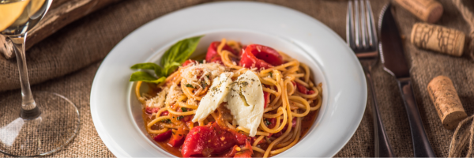

Ingredients
- 300 g dried spaghetti
- 200 g smoked salmon, sliced into strips
- 2 tbsp olive oil
- 2 cloves garlic, minced
- 1 small onion, finely chopped
- 200 ml heavy cream
- Zest and juice of 1 lemon
- 2 tbsp fresh dill, chopped
- Salt and freshly ground black pepper, to taste
- Grated Parmesan cheese, for serving
Instructions
- Bring a large pot of salted water to a boil. Cook the spaghetti according to package instructions until al dente. Drain and set aside.
- In a large skillet, heat olive oil over medium heat. Add onion and garlic, sauté until softened and fragrant.
- Stir in the smoked salmon strips and cook for 1–2 minutes, allowing the flavors to release.
- Pour in the heavy cream, lemon zest, and lemon juice. Simmer gently for 3–4 minutes until the sauce thickens slightly.
- Add the cooked spaghetti to the skillet, tossing well to coat in the creamy salmon sauce.
- Season with salt and pepper, then sprinkle with fresh dill.
- Serve immediately with grated Parmesan cheese on top.